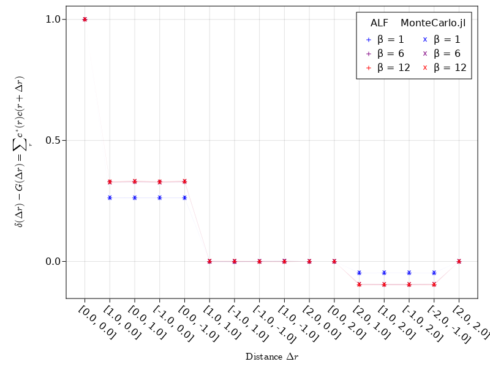
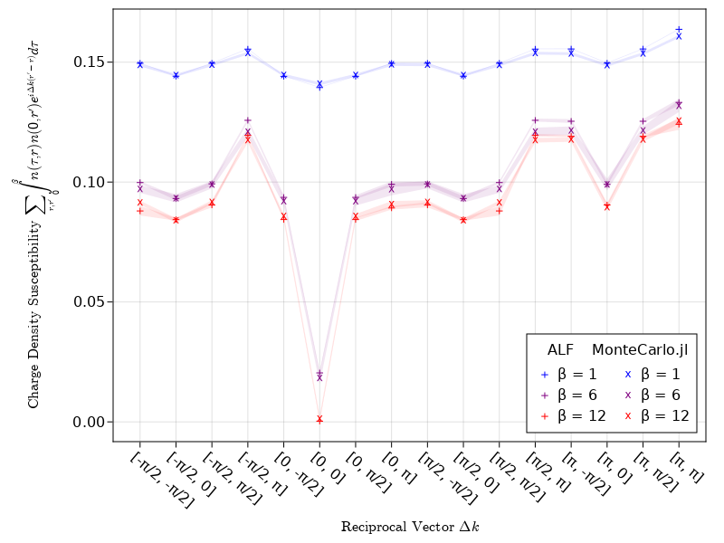

Crosscheck with ALF
The ALF project (Algorithms for lattice fermions) is a long running project implementing DQMC in Fortran. They have implemented various different models, lattices, stabilization methods and measurements. A relatively simple comparison for us will be the "plain vanilla Hubbard model" on a square lattice, which is close to but not exactly the same as our repulsive Hubbard model.
The ALF Simulation
Installation
The ALF project provides a python interface which we used for simplicity. For installation instructions see the link. At the time of writing pyALF is linked to ALF 2.0. (Specifically commit 82949f66065eff8214c0149c8be2d10d6d0a6822.)
You can also add a load path for pyALF temporarily in an active python session. Try import sys and sys.path.append('path/to/pyALF-ALF-2.0/').
Usage
With python, pyALF and the necessary packages installed we can now setup and run simulations. In python, we run:
import os
from py_alf import Simulation # Interface with ALF
sims = [] # Vector of Simulation instances
for beta in [1.0, 6.0, 12.0]: # Values of inverse temperature beta
sim = Simulation(
'Hubbard', # Hamiltonian
{ # Model and simulation parameters for each Simulation instance
'Model': 'Hubbard', # Base model
'Lattice_type': 'Square', # Lattice type
'L1': 4, # Lattice length in the first unit vector direction
'L2': 4, # Lattice length in the second unit vector direction
'Checkerboard': False, # Whether checkerboard decomposition is used or not
'Symm': True, # Whether symmetrization takes place
'ham_T': 1.0, # Hopping parameter
'ham_U': 4.0, # Hubbard interaction
'ham_Tperp': 0.0, # For bilayer systems
'beta': beta, # Inverse temperature
'Ltau': 1, # '1' for time-displaced Green functions; '0' otherwise
'NSweep': 100, # Number of sweeps per bin
'N_skip': 10, # skip 50 bins meaning 50x NSweep
'NBin': 60, # Number of bins
'Dtau': 0.1, # Only dtau varies between simulations, Ltrot=beta/Dtau
'Mz': True, # If true, sets the M_z-Hubbard model: Nf=2, N_sum=1,
}, # HS field couples to z-component of magnetization
alf_dir=os.getenv('ALF_DIR', './ALF'), # Directory with ALF source code. Gets it from
# environment variable ALF_DIR, if present
)
sims.append(sim)
sims[0].compile() # Compilation needs to be performed only once
import time
print("\nRunning sims\n")
for i, sim in enumerate(sims):
t0 = time.time()
sim.run() # Perform the actual simulation in ALF
print(time.time() - t0)
print("\nAnalysis:\n")
for i, sim in enumerate(sims):
print(sim.sim_dir) # Directory containing the simulation output
sim.analysis()Let's briefly go over some of the options picked here. One noteworthy option is Symm. With it you can switch between a symmetric (True) and antisymmetric (False) Trotter decomposition. In MonteCarlo.jl we use the symmetric version so we should do so here too. Next we have Ltau. As mentioned in the comment this controls whether time displaced greens function are calculated, and by extension whether time displaced observables (susceptibilties) are calculated. We want to compare as much as possible so we set Ltau = 1.
And finally we have the combination of NSweep, N_skip and NBin. NSweep is the number of sweeps in a block, which is usually followed by a measurement. NBin sets how many of those blocks are executed and N_skip disables measurements for some number of blocks at the start. Thus we have the relations thermalization = NSweep * N_skip, sweeps = NSweep * (NBin - N_skip) and measure_rate = NSweep.
Regarding the choices for NSweep, N_skip and NBin it is also important to discuss the model ALF implements and how it is implemented. As mentioned before it is not quite the same as the repulsive Hubbard model from DQMC. ALF implements
which features a quadratic interaction rather than the $\sim (n_\uparrow - 0.5)(n_\downarrow - 0.5)$ term used in MonteCarlo.jl. If we apply a Hirsch transformation (like in MonteCarlo.jl) to both of these interactions, we end up with the same expression. Thus they would be the same from the simulations point of view. However ALF uses a different, (potentially) more precise transformation based on Gauß-Hermite quadrature. Thus some small differences are to be expected.
For more information on the Hamiltonian and transformation used by ALF see the ALF documentation
{kind=link}
The MonteCarlo.jl Simulation
The MonteCarlo.jl simulation should more or less mirror the options picked for ALF. We run
using Revise, MonteCarlo, Printf, LinearAlgebra
mcs = []
@time for beta in [1.0, 6.0, 12.0]
m = HubbardModelRepulsive(4, 2, U = 4)
mc = DQMC(
m, beta=beta, thermalization=5_000, sweeps=15_000,
print_rate=5_000, delta_tau = 0.05#, measure_rate=5
)
# our default versions
mc[:G] = greens_measurement(mc, m)
mc[:SDCz] = spin_density_correlation(mc, m, :z)
mc[:SDSz] = spin_density_susceptibility(mc, m, :z)
mc[:T] = noninteracting_energy(mc, m)
# ALF defines our I - G as the measured Greens function
function mygreens(mc, m, ij, G)
i, j = ij; N = length(lattice(mc))
swapop(G)[i, j] + swapop(G)[i+N, j+N]
end
mc[:Gr] = MonteCarlo.Measurement(mc, m, Greens, EachSitePairByDistance(), mygreens)
# The interaction energy needs to be adjusted to ALF's Hamiltonian
function my_intE(mc, m, G)
E = 0.0; N = length(lattice(mc))
Gup, Gdown = G.val.blocks
for i in 1:N
E += (1 - Gup[i, i]) * (1 - Gdown[i, i])
end
m.U * E
end
mc[:V] = MonteCarlo.Measurement(mc, m, Greens, nothing, my_intE)
# ALF includes 0 and β in the time displaced greens function
myGk(mc, m, ij, Gs) = begin G00, G0l, Gl0, Gll = Gs; i, j = ij; Gl0[i, j] end
mc[:IGk] = MonteCarlo.Measurement(
mc, m, CombinedGreensIterator, EachSitePairByDistance(), myGk
)
# ALF subtracts the uncorrelated part
function myDenDen(mc, m, ij, G)
i, j = ij; N = length(lattice(mc))
swapop(G)[i, j] * G[i, j] + swapop(G)[i+N, j+N] * G[i+N, j+N]
end
mc[:DenDen] = MonteCarlo.Measurement(mc, m, Greens, EachSitePairByDistance(), myDenDen)
function myDenDenTau(mc, m, ij, Gs)
i, j = ij; N = length(lattice(mc))
G00, G0l, Gl0, Gll = Gs
swapop(G0l)[i, j] * Gl0[i, j] + swapop(G0l)[i+N, j+N] * Gl0[i+N, j+N]
end
mc[:DenDenTau] = MonteCarlo.Measurement(mc, m, CombinedGreensIterator, EachSitePairByDistance(), myDenDenTau)
run!(mc)
push!(mcs, mc)
endWe run our simulations with a small $\Delta\tau$ and larger number of sweeps to reduce errors. With the given parameters the simulations will take about 6min.
A lot of the observables we measure have been adjusted to match ALF. First we have the real space equal time Greens function :Gr which measures $\delta(\Delta r) - G(\Delta r) = \sum_r c_r^\dagger c_{r + \Delta r}$. The MonteCarlo.jl Greens function is given as $c c^\dagger$, so we need to swap the operators with swapop. We also need to explicitly sum the spin up and spin down channels.
Next we have the interaction energy :V which needs adjustments to the different pre-transformation term. We calculate $\langle V \rangle = \frac{U}{2} \sum_i \langle V_i \rangle$ where
Each term needs to be Wicks-expanded
so it can be exchanged by Greens function elements
Next we make use of the symmetries of the model. Specifically that we do not have mixed spin terms, i.e. $G_{ij}^{\sigma \sigma^\prime} = 0$ if $\sigma \ne \sigma^\prime$. We can also replace $I$ by $1$ in the remaining cases as both spin and site index are equal. We get
which we simplify further by using $x = 1 - (1 - x)$.
This is however not what ALF implements as the potential energy. Instead of the above, ALF uses
which is implemented above. After that we have the Fourier transformed time displaced Greens function :IGk which calculates the Fourier transform of $G^\prime(\Delta r) = \sum_{\tau = \Delta\tau}^{\beta} \Delta\tau \sum_r c_r(\tau) c_{r + \Delta r}^\dagger(0)$. Finally we have the charge density correlation :DenDen and susceptibility :DenDenTau which implement $\sum_r \langle \langle n_r n_{r - \Delta r} \rangle - \langle n_r \rangle \langle n_{r + \Delta r} \rangle \rangle_{MC}$. We note here that the subtraction happens before taking the Monte Carlo average denoted by $\langle \cdot \rangle_{MC}$.
Loading ALF Data
ALF will generate a folder with multiple files for each measurement. You should find these in your pyALF directory under ALF_data. To load everything you need to compare results we run
using Statistics
p = "path/to/ALF_data"
folders = [
"Hubbard_Square_L1=4_L2=4_Checkerboard=False_Symm=True_T=1.0_U=4.0_Tperp=0.0_beta=1.0_Dtau=0.1_Mz=True",
"Hubbard_Square_L1=4_L2=4_Checkerboard=False_Symm=True_T=1.0_U=4.0_Tperp=0.0_beta=6.0_Dtau=0.1_Mz=True",
"Hubbard_Square_L1=4_L2=4_Checkerboard=False_Symm=True_T=1.0_U=4.0_Tperp=0.0_beta=12.0_Dtau=0.1_Mz=True",
]
# equal time Greens
dirs = []
Gs = []
dGs = []
# other equal time observables
Ts = [] # SpinT ~ 4 * (sx + sy + sz) / 3
dTs = []
SDCxys = [] # SpinXY ~ 2 * (sx + sy)
dSDCxys = []
SDCzs = [] # SpinZ ~ 4 * sz
dSDCzs = []
CDCs = [] # Den
dCDCs = []
CDCks = [] # Den
dCDCks = []
# Energies
Ks = []
dKs = []
Vs = []
dVs = []
Es = []
dEs = []
# unequal time
ks = []
Gks = []
dGks = []
CDCts = [] # Den
dCDCts = []
SDSzs = [] # SpinZ ~ 4 * sz
dSDSzs = []
function read_scal(filename)
open(filename, "r") do f
data = map(eachline(f)) do line
parts = filter(x -> !isempty(x), split(line, r" +"))
parse(Float64, split(parts[2], ',')[1][2:end])
end
mean(data), std(data) / sqrt(length(data))
end
end
function readJR(filename)
open(filename, "r") do f
data = map(eachline(f)) do line
parse.(Float64, filter(x -> !isempty(x), split(line, r" +")))
end
drs = data[1:2:end]
ys = getindex.(data[2:2:end], 3)
dys = getindex.(data[2:2:end], 4)
drs, ys, dys
end
end
function read_tauJK(filename)
open(filename, "r") do f
data = map(eachline(f)) do line
parse.(Float64, filter(x -> !isempty(x), split(line, r" +")))
end
dks = [d[1:2] for d in data]
gs = [ComplexF64(d[3], d[5]) for d in data]
dgs = [ComplexF64(d[4], d[6]) for d in data]
dks, gs, dgs
end
end
for folder in folders
drs, gs, dgs = readJR(joinpath(p, folder, "Green_eqJR"))
if isempty(dirs)
push!(dirs, drs)
else
@assert dirs[end] == drs
end
push!(Gs, gs)
push!(dGs, dgs)
drs, cdcs, dcdcs = readJR(joinpath(p, folder, "Den_eqJR"))
@assert dirs[end] == drs
push!(CDCs, cdcs)
push!(dCDCs, dcdcs)
drs, ts, dts = readJR(joinpath(p, folder, "SpinT_eqJR"))
@assert dirs[end] == drs
push!(Ts, ts)
push!(dTs, dts)
drs, sdcxys, dsdcxys = readJR(joinpath(p, folder, "SpinXY_eqJR"))
@assert dirs[end] == drs
push!(SDCxys, sdcxys)
push!(dSDCxys, dsdcxys)
drs, sdczs, dsdczs = readJR(joinpath(p, folder, "SpinZ_eqJR"))
@assert dirs[end] == drs
push!(SDCzs, sdczs)
push!(dSDCzs, dsdczs)
dks, gks, dgks = readJR(joinpath(p, folder, "Den_eqJK"))
if isempty(ks)
push!(ks, dks)
else
@assert ks[end] == dks
end
push!(CDCks, gks)
push!(dCDCks, dgks)
dks, gks, dgks = read_tauJK(joinpath(p, folder, "Green_tauJK"))
@assert ks[end] == dks
push!(Gks, gks)
push!(dGks, dgks)
dks, gks, dgks = read_tauJK(joinpath(p, folder, "Den_tauJK"))
@assert ks[end] == dks
push!(CDCts, gks)
push!(dCDCts, dgks)
dks, gks, dgks = read_tauJK(joinpath(p, folder, "SpinZ_tauJK"))
@assert ks[end] == dks
push!(SDSzs, gks)
push!(dSDSzs, dgks)
e, de = read_scal(joinpath(p, folder, "Kin_scal"))
push!(Ks, e)
push!(dKs, de)
e, de = read_scal(joinpath(p, folder, "Pot_scal"))
push!(Vs, e)
push!(dVs, de)
e, de = read_scal(joinpath(p, folder, "Ener_scal"))
push!(Es, e)
push!(dEs, de)
end
mc_drs = MonteCarlo.directions(mcs[1])
idxs = map(v -> findfirst(isequal(v), dirs[1]), mc_drs)
idxs[end-1] = 13The only thing worth mentioning here is the order of offset vectors $\Delta r$. The order of observable values is linked to these vectors, whose order differs between MonteCarlo.jl and ALF. To adjust the order we compute idxs here. Note that because we work with periodic lattices there are multiple valid options for some of these vectors. Because of this we set one index explicitly.
Comparing the results
To compare the results we will plot points over each other. Most observables have the same layout, i.e. values vs either spatial or reciprocal distance vectors. We will plot these with the following functions.
using CairoMakie
function plot_by_distance(
ys, dys, key;
idxs = idxs, xs = 1:16, xticks = map(v -> "[$(v[1]), $(v[2])]", mc_drs),
ylabel, legend_pos = :rt
)
fig = Figure(figure_padding = (10, 20, 10, 10))
ax = Axis(fig[1, 1])
cs = (:blue, :purple, :red)
for l in 1:3 # temperature index
band!(ax, xs, ys[l][idxs] .- dys[l][idxs], ys[l][idxs] .+ dys[l][idxs], color = (cs[l], 0.1))
scatter!(ax, xs, ys[l][idxs], color = cs[l], marker='+', markersize=12)
low = mean(mcs[l][key]) .- std_error(mcs[l][key])
high = mean(mcs[l][key]) .+ std_error(mcs[l][key])
band!(ax, xs, low, high, color = (cs[l], 0.1))
scatter!(ax, xs, mean(mcs[l][key]), color = cs[l], marker='x', markersize=12)
end
lbls = [
"β = 1", "β = 1",
"β = 6", "β = 6",
"β = 12", "β = 12"
]
axislegend(ax, ax.scene.plots[3:2:end], lbls, " ALF MonteCarlo.jl", nbanks=2, position = legend_pos)
ax.ylabel[] = ylabel
ax.xticks[] = (xs, xticks)
ax.xlabel[] = "Distance Δr"
ax.xticklabelrotation[] = -0.7
# to fix bad spacing, likely unnecessary in the near future
ax.xlabelpadding[] = 10
fig, ax
end
function plot_reciprocal(
ys, dys, key;
xs = 1:16, ylabel, legend_pos = :rt,
xticks = labels = map(ks[1]) do k
pieces = map(k) do x
if x ≈ 0.5f0 * pi; "π/2"
elseif x ≈ 1f0 * pi; "π"
elseif x ≈ -0.5f0 * pi; "-π/2"
elseif x ≈ 0.0; "0"
else; "$x"
end
end
"[" * join(pieces, ", ") * "]"
end
)
fig = Figure(figure_padding = (10, 20, 10, 10))
ax = Axis(fig[1, 1])
cs = (:blue, :purple, :red)
for l in 1:3 # temperature index
low = real(real(ys[l]) .- real(dys[l]))
high = real(real(ys[l]) .+ real(dys[l]))
band!(ax, xs, low, high, color = (cs[l], 0.1))
scatter!(ax, xs, real(ys[l]), color = cs[l], marker='+', markersize=12)
_ys = map(1:16) do j
MonteCarlo.fourier_transform(
ks[1][j:j],
directions(mcs[l]),
mcs[l][key] |> mean
)[1]
end
_dys = map(1:16) do j
vals = std_error(mcs[l][key])
dirs = directions(mcs[l])
q = ks[1][j]
sum((cis(dot(q, v)) * o)^2 for (v, o) in zip(dirs, vals)) |> mean |> sqrt
end
low = real(_ys .- _dys)
high = real(_ys .+ _dys)
band!(ax, xs, low, high, color = (cs[l], 0.1))
scatter!(ax, xs, real(_ys), color = cs[l], marker='x', markersize=12)
end
lbls = [
"β = 1", "β = 1",
"β = 6", "β = 6",
"β = 12", "β = 12"
]
axislegend(ax, ax.scene.plots[3:2:end], lbls, " ALF MonteCarlo.jl", nbanks=2, position = legend_pos)
ax.ylabel[] = ylabel
ax.xticks[] = (xs, xticks)
ax.xlabel[] = "Reciprocal Vector Δk"
ax.xticklabelrotation[] = -0.7
# to fix bad spacing, likely unnecessary in the near future
ax.xlabelpadding[] = 10
fig, ax
endEqual time Greens function
The equal time Greens function shows a clean overlap between the two libraries.
fig, ax = plot_by_distance(
Gs, dGs, :Gr, factor = 2.0,
ylabel = "δ(Δr) - G(Δr) = ∑ᵣ ⟨c^†(r) c(r + Δr)⟩"
)
Makie.save("equal_time_greens.png", fig)
display(fig)
Time displaced Greens function
For the time-displaced Greens function the overlap becomes visibly less precise. This is likely a result of the different transformations used. Reducing $\Delta \tau$ in MonteCarlo.jl decreases the error.
fig, ax = plot_reciprocal(
Gks, dGks, :IGk,
ylabel = "Integrated Greens function ∑ₖ ∫ ⟨c(τ, k) c^†(0, k + Δk)⟩ dτ"
)
Makie.save("time_displaced_greens.png", fig)
display(fig)Energies
For the kinetic energy and interaction we only get one value per simulation so we just compare them numerically. In this case all values match with errors. The first group shows kinetic energy and the second interaction.
| Inv. Temp. | ALF | MonteCarlo.jl | ALF | MonteCarlo.jl | |
|---|---|---|---|---|---|
| 1 | -16.855 ± 0.005 | -16.83 ± 0.07 | 8.775 ± 0.003 | 8.75 ± 0.03 | |
| 6 | -21.107 ± 0.002 | -21.00 ± 0.08 | 7.72 ± 0.02 | 7.64 ± 0.09 | |
| 12 | -21.109 ± 0.002 | -21.12 ± 0.09 | 7.538 ± 0.006 | 7.54 ± 0.05 |
Charge Density Correlations
Like the equal time Greens function the charge density matches close to exactly.
fig, ax = plot_by_distance(CDCs, dCDCs, :DenDen, ylabel = "Charge Density Correlation ∑ᵣ ⟨n(r) n(r + Δr)⟩")
Makie.save("charge_density_correlation.png", fig)
display(fig)Charge Density Susceptibility
The charge susceptibility shows some larger errors but still matches fairly well. The errors we see here are generally smaller than what we saw in the integrated Greens function.
fig, ax = plot_reciprocal(
CDCts, dCDCts, :DenDenTau,
ylabel = "Charge Density Susceptibility ∑ᵣ ∫ ⟨n(τ, r) n(0, r + Δr)⟩ dτ"
)
Makie.save("charge_density_susceptibility.png", fig)
display(fig)
Spin Density Correlation
Like the other equal time correlations spin density also fits almost exactly.
fig, ax = plot_by_distance(SDCzs, dSDCzs, :SDCz, ylabel = "Spin Density Correlation ∑ᵣ ⟨s_z(r) s_z(r + Δr)⟩")
Makie.save("spin_density_correlation.png", fig)
display(fig)
Spin Density Susceptibility
Like the other susceptibilities, this shows some larger deviations than its equal time variant but no qualitative difference from ALF.
lbl = L"Spin Density Susceptibility $\sum_{r, r^\prime} \int_0^\beta s_z(\tau, r) s_z(0, r^\prime) e^{i \Delta k (r^\prime - r)} d\tau$"
fig, ax = plot_reciprocal(
SDSzs, dSDSzs, :SDSz, legend_pos = :lt,
ylabel = lbl
)
Makie.save("spin_density_susceptibility.png", fig)
display(fig)